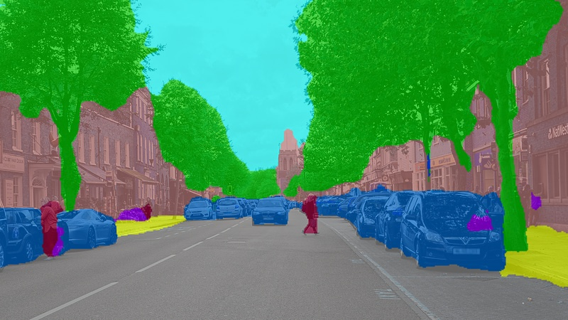
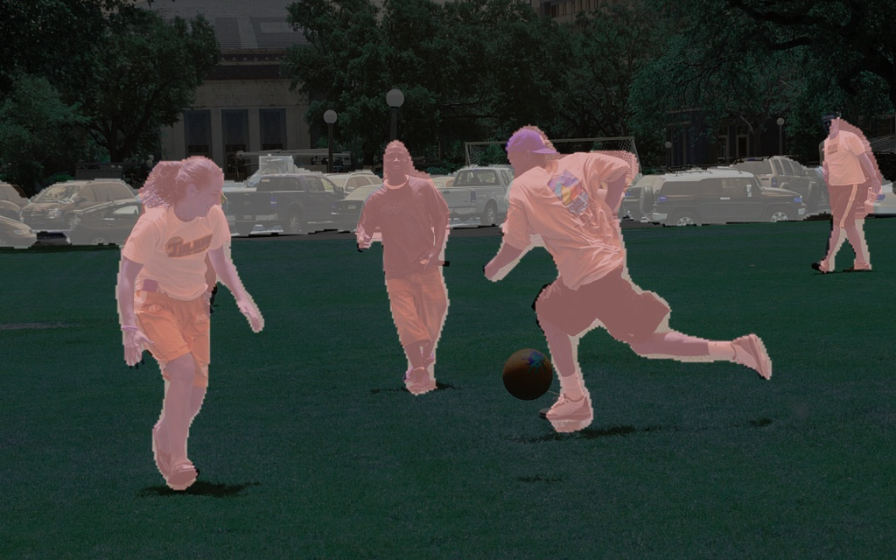
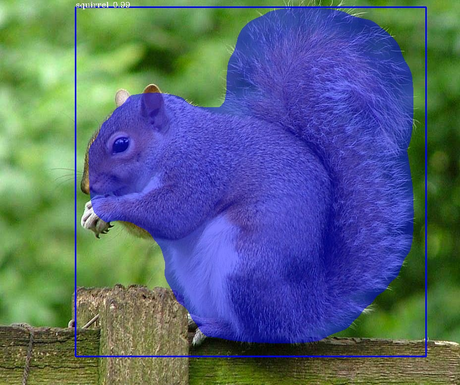

PIXELLIB’S OFFICIAL DOCUMENTATION¶
PixelLib is a library created for performing image and video segmentation using few lines of code. It is a flexible library created to allow easy integration of image and video segmentation into software solutions.
PixelLib requires python’s version 3.5-3.7, Download python
It requires pip’s version >= 19.0
Install pip with:
pip3 install pip
Install PixelLib and its dependencies:
Install the latest version of tensorflow(Tensorflow 2.0+) with:
pip3 install tensorflow
Install imgaug with:
pip3 install imgaug
Install PixelLib with:
pip3 install pixellib --upgrade
PixelLib supports the two major types of segmentation and you can create a custom model for objects’ segmentation by training your dataset with PixelLib:
1 Semantic segmentation: Objects in an image with the same pixel values are segmented with the same colormaps.
Semantic segmentation of images with PixelLib using Ade20k model
Semantic segmentation of videos with PixelLib using Ade20k model
Semantic segmentation of images with PixelLib using Pascalvoc model
Semantic Segmentation of videos with PixelLib using Pascalvoc model
2 Instance segmentation: Instances of the same object are segmented with different color maps.

Instance segmentation of images with PixelLib
Instance segmentation of videos with PixelLib
3 Implement Instance Segmentation And Object Detection On Objects By Training Your Dataset..
Inference With A Custom Model Trained With PixelLib
Implement background editing in images and videos using five lines of code. These are the features supported for background editing.
Change the background of an image with a picture
Assign a distinct color to the background of an image
Grayscale the background of an image
Blur the background of an image
Change the background of an Image

Change the background of a Video
Change the Background of A Video
Contents:
- Semantic segmentation of images with PixelLib using Ade20k model
- Semantic segmentation of videos with PixelLib using Ade20k model
- Segmentation of live camera with Ade20k model
- Semantic segmentation of images with PixelLib using Pascalvoc model
- Semantic Segmentation of videos with PixelLib using Pascalvoc model
- Segmentation of live camera with pascalvoc model
- Instance segmentation of images with PixelLib
- Instance segmentation of videos with PixelLib
- Extraction of objects in videos
- Segmentation of Specific Classes in Videos
- Instance Segmentation of Live Camera with Mask R-cnn.
- Custom Training With PixelLib
- Inference With A Custom Model
- Extraction of Segmented Objects in Videos
- Image Tuning With PixelLib
- Change the Background of A Video
CONTACT INFO: